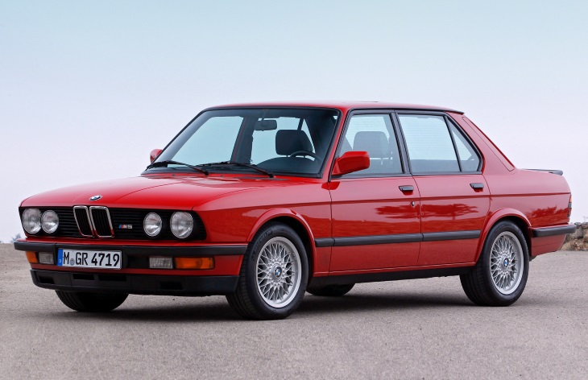

BMW M5 • 1 поколение (E28) • 1985–1987
Мощный заднеприводный седан BMW M5 впервые был представлен публике в 1985 году. Внешне автомобиль практически не отличался от «пятерки» второго поколения, но под капотом у него стоял двигатель от мелкосерийного купе BMW M1 — рядная «шестерка» объемом 3,5 литра, развивающая 286 л. с. (версия для американского рынка имела мощность 256 л. с.) Благодаря этому BMW M5 разгонялся до 100 км/ч за 6,2 секунды и был признан самым быстрым серийным седаном тех лет. Среди других отличий — более короткие пружины и амортизаторы, а также усиленные тормоза. Всего до 1987 года выпустили 2241 автомобиль, большинство из них сделали на фабрике подразделения BMW M GmbH в Мюнхене, а 96 машин было собрано на заводе в ЮАР.
